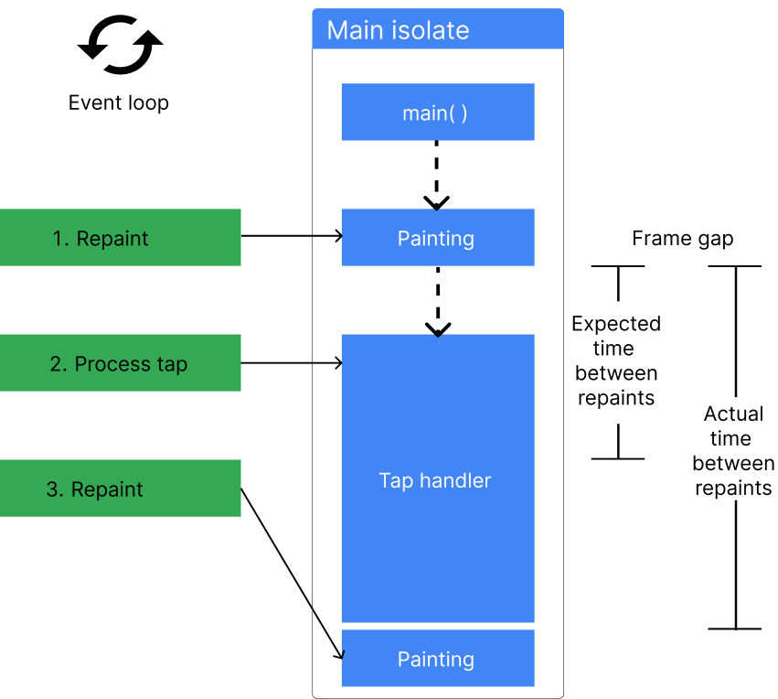
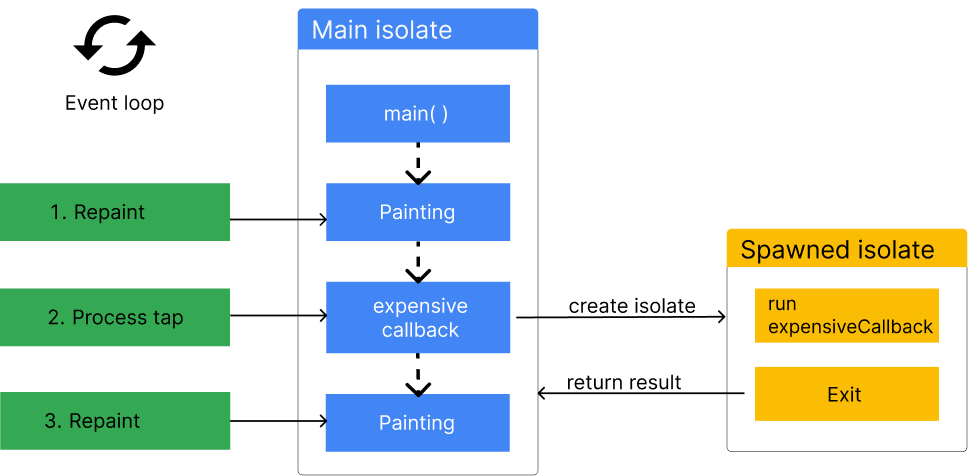

Concurrency and isolates
All Dart code runs in isolates, which are similar to threads, but differ in that isolates have their own isolated memory. They do not share state in any way, and can only communicate by messaging. By default, Flutter apps do all of their work on a single isolate – the main isolate. In most cases, this model allows for simpler programming and is fast enough that the application’s UI doesn’t become unresponsive.
Sometimes though, applications need to perform exceptionally large computations that can cause “UI jank” (jerky motion). If your app is experiencing jank for this reason, you can move these computations to a helper isolate. This allows the underlying runtime environment to run the computation concurrently with the main UI isolate’s work and takes advantage of multi-core devices.
Each isolate has its own memory and its own event loop. The event loop processes events in the order that they’re added to an event queue. On the main isolate, these events can be anything from handling a user tapping in the UI, to executing a function, to painting a frame on the screen. The following figure shows an example event queue with 3 events waiting to be processed.

For smooth rendering, Flutter adds a “paint frame” event to the event queue 60 times per second(for a 60Hz device). If these events aren’t processed on time, the application experiences UI jank, or worse, become unresponsive altogether.

Whenever a process can’t be completed in a frame gap, the time between two frames, it’s a good idea to offload the work to another isolate to ensure that the main isolate can produce 60 frames per second. When you spawn an isolate in Dart, it can process the work concurrently with the main isolate, without blocking it.
You can read more about how isolates and the event loop work in Dart on the concurrency page of the Dart documentation.
Common use cases for isolates
There is only one hard rule for when you should use isolates, and that’s when large computations are causing your Flutter application to experience UI jank. This jank happens when there is any computation that takes longer than Flutter’s frame gap.
Any process could take longer to complete, depending on the implementation and the input data, making it impossible to create an exhaustive list of when you need to consider using isolates.
That said, isolates are commonly used for the following:
- Reading data from a local database
- Sending push notifications
- Parsing and decoding large data files
- Processing or compressing photos, audio files, and video files
- Converting audio and video files
- When you need asynchronous support while using FFI
- Applying filtering to complex lists or filesystems
Message passing between isolates
Dart’s isolates are an implementation of the Actor model.
They can only communicate with each other by message passing,
which is done with Port objects.
When messages are “passed” between each other,
they are generally copied from the sending isolate to the
receiving isolate.
This means that any value passed to an isolate,
even if mutated on that isolate,
doesn’t change the value on the original isolate.
The only objects that aren’t copied when passed to an isolate are immutable objects that can’t be changed anyway, such a String or an unmodifiable byte. When you pass an immutable object between isolates, a reference to that object is sent across the port, rather than the object being copied, for better performance. Because immutable objects can’t be updated, this effectively retains the actor model behavior.
An exception to this rule is
when an isolate exits when it sends a message using the Isolate.exit method.
Because the sending isolate won’t exist after sending the message,
it can pass ownership of the message from one isolate to the other,
ensuring that only one isolate can access the message.
The two lowest-level primitives that send messages are SendPort.send,
which makes a copy of a mutable message as it sends,
and Isolate.exit,
which sends the reference to the message.
Both Isolate.run and compute
use Isolate.exit under the hood.
Short-lived isolates
The easiest way to move a process to an isolate in Flutter is with
the Isolate.run method.
This method spawns an isolate,
passes a callback to the spawned isolate to start some computation,
returns a value from the computation,
and then shuts the isolate down when the computation is complete.
This all happens concurrently with the main isolate,
and doesn’t block it.

The Isolate.run method requires a single argument,
a callback function,
that is run on the new isolate.
This callback’s function signature must have exactly
one required, unnamed argument.
When the computation completes,
it returns the callback’s value back to the main isolate,
and exits the spawned isolate.
For example, consider this code that loads a large JSON blob from a file, and converts that JSON into custom Dart objects. If the json decoding process wasn’t off loaded to a new isolate, this method would cause the UI to become unresponsive for several seconds.
// Produces a list of 211,640 photo objects.
// (The JSON file is ~20MB.)
Future<List<Photo>> getPhotos() async {
final String jsonString = await rootBundle.loadString('assets/photos.json');
final List<Photo> photos = await Isolate.run<List<Photo>>(() {
final List<Object?> photoData = jsonDecode(jsonString) as List<Object?>;
return photoData.cast<Map<String, Object?>>().map(Photo.fromJson).toList();
});
return photos;
}For a complete walkthrough of using Isolates to parse JSON in the background, see this cookbook recipe.
Stateful, longer-lived isolates
Short-live isolates are convenient to use,
but there is performance overhead required to spawn new isolates,
and to copy objects from one isolate to another.
If you’re doing the same computation using Isolate.run repeatedly,
you might have better performance by creating isolates that don’t exit immediately.
To do this, you can use a handful of lower-level isolate-related APIs that
Isolate.run abstracts:
-
Isolate.spawn()andIsolate.exit() -
ReceivePortandSendPort -
send()method
When you use the Isolate.run method,
the new isolate immediately shuts down after it
returns a single message to the main isolate.
Sometimes, you’ll need isolates that are long lived,
and can pass multiple messages to each other over time.
In Dart, you can accomplish this with the Isolate API
and Ports.
These long-lived isolates are colloquially known as background workers.
Long-lived isolates are useful when you have a specific process that either needs to be run repeatedly throughout the lifetime of your application, or if you have a process that runs over a period of time and needs to yield multiple return values to the main isolate.
Or, you might use worker_manager to manage long-lived isolates.
ReceivePorts and SendPorts
Set up long-lived communication between isolates with two classes
(in addition to Isolate):
ReceivePort and SendPort.
These ports are the only way isolates can communicate with each other.
Ports behave similarly to Streams,
in which the StreamController
or Sink is created in one isolate,
and the listener is set up in the other isolate.
In this analogy,
the StreamConroller is called a SendPort,
and you can “add” messages with the send() method.
ReceivePorts are the listeners,
and when these listeners receive a new message,
they call a provided callback with the message as an argument.
For an in-depth explanation on setting up two-way communication between the main isolate and a worker isolate, follow the examples in the Dart documentation.
Using platform plugins in isolates
As of Flutter 3.7, you can use platform plugins in background isolates. This opens many possibilities to offload heavy, platform-dependent computations to an isolate that won’t block your UI. For example, imagine you’re encrypting data using a native host API (such as an Android API on Android, an iOS API on iOS, and so on). Previously, marshaling data to the host platform could waste UI thread time, and can now be done in a background isolate.
Platform channel isolates use the BackgroundIsolateBinaryMessenger API.
The following snippet shows an example of using
the shared_preferences package in a background isolate.
import 'dart:isolate';
import 'package:flutter/services.dart';
import 'package:shared_preferences/shared_preferences.dart';
void main() {
// Identify the root isolate to pass to the background isolate.
RootIsolateToken rootIsolateToken = RootIsolateToken.instance!;
Isolate.spawn(_isolateMain, rootIsolateToken);
}
Future<void> _isolateMain(RootIsolateToken rootIsolateToken) async {
// Register the background isolate with the root isolate.
BackgroundIsolateBinaryMessenger.ensureInitialized(rootIsolateToken);
// You can now use the shared_preferences plugin.
SharedPreferences sharedPreferences = await SharedPreferences.getInstance();
print(sharedPreferences.getBool('isDebug'));
}Limitations of Isolates
If you’re coming to Dart from a language with multithreading,
it’s reasonable to expect isolates to behave like threads,
but that isn’t the case.
Isolates have their own global fields,
and can only communicate with message passing,
ensuring that mutable objects in an isolate are only ever accessible
in a single isolate.
Therefore, isolates are limited by their access to their own memory.
For example,
if you have an application with a global mutable variable called configuration,
it is copied as a new global field in a spawned isolate.
If you mutate that variable in the spawned isolate,
it remains untouched in the main isolate.
This is true even if you pass the configuration object as a message
to the new isolate.
This is how isolates are meant to function,
and it’s important to keep in mind when you consider using isolates.
Web platforms and compute
Dart web platforms, including Flutter web,
don’t support isolates.
If you’re targeting the web with your Flutter app,
you can use the compute method to ensure your code compiles.
The compute() method runs the computation on
the main thread on the web,
but spawns a new thread on mobile devices.
On mobile and desktop platforms
await compute(fun, message)
is equivalent to await Isolate.run(() => fun(message)).
For more information on concurrency on the web, check out the concurrency documentation on dart.dev.
No rootBundle access or dart:ui methods
All UI tasks and Flutter itself are coupled to the main isolate.
Therefore,
you can’t access assets using rootBundle in spawned isolates,
nor can you perform any widget
or UI work in spawned isolates.
Limited plugin messages from host platform to Flutter
With background isolate platform channels, you can use platform channels in isolates to send messages to the host platform (for example Android or iOS), and receive responses to those messages. However, you can’t receive unsolicited messages from the host platform.
As an example, you can’t set up a long-lived Firestore listener in a background isolate, because Firestore uses platform channels to push updates to Flutter, which are unsolicited. You can, however, query Firestore for a response in the background.
More information
For more information on isolates, check out the following resources:
- If you’re using many isolates, consider the IsolateNameServer class in Flutter, or the pub package that clones the functionality for Dart applications not using Flutter.
- Dart’s Isolates are an implementation of the Actor model.
- isolate_agents is a package that abstracts Ports and make it easier to create long-lived isolates.
- Read more about the
BackgroundIsolateBinaryMessengerAPI announcement.